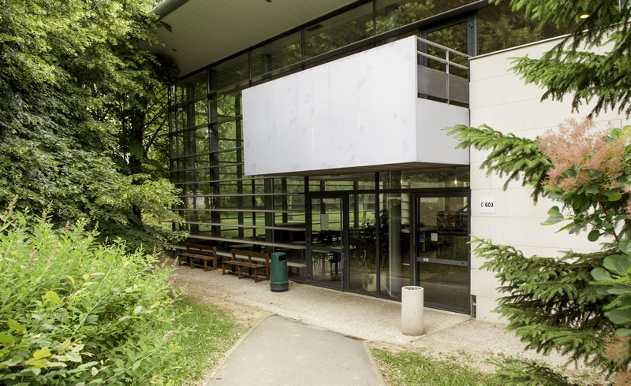

BUT Informatique
IUT d'Orsay
Septembre 2023 - Maintenant
À la suite de l'obtention de mon baccalauréat j'ai choisi de poursuivre directement en BUT informatique à l'IUT d'Orsay et cela fait maintenant trois semestres que j'y suis en vue de l'obtention de mon BUT en informatique.
